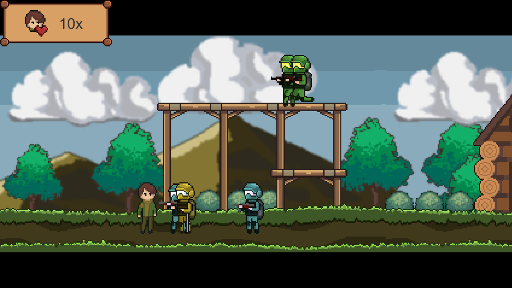
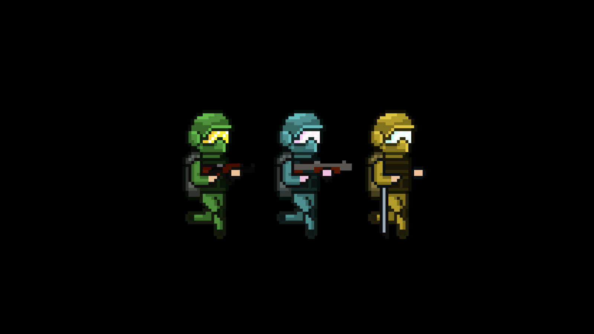

Undergraduate thesis · 2022
MCTS for Dynamic Difficulty Adjustment
A 2D arcade shooter whose difficulty adapts to the player using the Monte Carlo Tree Search algorithm.

- My roles
- Game design, programming, AI, level design, art, animation
- Team
- 4 students
- School
- University of Santo Tomas
- Engine
- Unity 2020.3, C#
- Year
- 2022
- Status
- Defended
Overview
Dynamic difficulty adjustment tunes a game's challenge while it's being played, so it keeps up with the player instead of relying on a fixed difficulty setting. For our undergraduate thesis, a team of four, we built Blitzkrieg, a pixel-art 2D arcade shooter, and used Monte Carlo Tree Search to drive its difficulty.
What I built
- The enemies' AI logic.
- Most of the player mechanics, including movement and shooting.
- The level design.
- The pixel art, drawn with Nymphel Jhoy M. Rafanan, and all of the animation.
How it works
Each level is split into sections. When the player clears a section, their performance (a score built from their health and accuracy) goes to an AI director. The director runs Monte Carlo Tree Search to pick the next section's enemy composition from a pool of enemy types, aiming for the mix most likely to challenge that player. The adjustment is hidden, so players can't game it by playing badly on purpose.
A short test stage comes first to calibrate each player's baseline skill. Then they play two versions of the game: one with a scripted difficulty that rises steadily, and one with the MCTS director.
Results
54 players tested both versions without knowing how they differed. 32 of them (59.3%) preferred the version with dynamic difficulty, and 22 (40.7%) preferred the scripted one. Every score group from the adaptive version showed a positive correlation between player score and the director's difficulty, so the difficulty followed the player's skill as intended. No score group from the scripted version did.
The thesis was defended as part of my BS in Computer Science, major in Game Development. The paper isn't published online.
Screenshots

